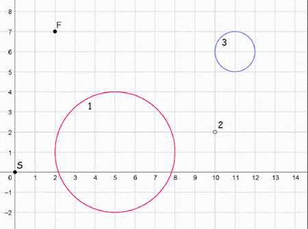

Pak Dengklek is in a room that can be represented in a Cartesian coordinate system. In the beginning, this room is very dark and there is only a single light source that emits a beam of light.
A beam of light can be represented with $3$ parameters: centre point which is located at point $(x_p, y_p)$, width of the beam $w$, and the direction of the beam $d$. The variable $d$ can be either $\text{vertical}$ or $\text{horizontal}$. This beam of light will illuminate all points $(x', y')$ that fulfill the inequality:
In this room, there are $N$ magical pillars numbered from $1$ to $N$. The $i$-th pillar has the shape of a circle with centre point $(X_i, Y_i)$ and radius $R_i$. Two pillars might overlap each other.
These magical pillars have a unique property. If the $i$-th pillar is hit by a beam of light with direction $d$, then that pillar will emit a beam of light from centre point $(X_i, Y_i)$ with width $R_i$ and direction $d$. A pillar is hit by a beam of light if there exists a point inside the pillar that is illuminated by that beam. A point $(x, y)$ is inside the $i$-th pillar if $(X_i - x)^2 + (Y_i - y)^2 \leq R_i^2$.
Pak Dengklek can upgrade the $i$-th pillar with cost $C_i$. If an upgraded pillar $i$ is hit by a beam of light, then that pillar with emit $2$ beams of light with direction vertical and horizontal from centre point $(X_i, Y_i)$ and width $R_i$. In the beginning, all pillars are not upgraded.
The only light source in that room emits a beam of light from centre point $(X_S, Y_S)$ with width $0$ and direction horizontal. Pak Dengklek wants to know the minimum total cost to illuminate point $(X_F, Y_F)$. Help Pak Dengklek to find the minimum total cost to illuminate that point, or tell him if it is impossible to do so.
The input is given with the following format:
N XS YS XF YF X1 Y1 R1 C1 X2 Y2 R2 C2 . . . XN YN RN CN
A single line consists of an integer which represents the minimum total cost to
illuminate point $(X_F, Y_F)$. Output -1 if that point is
impossible to illuminate.
3 0 0 2 7 5 1 3 100 10 2 0 3 11 6 1 2
5
This sample can be illustrated with the following animation. Pak Dengklek activates the $2$-nd and $3$-rd pillar with total cost of $5$. There is no other pillar activation configuration which gives smaller total cost.

2 1 1 10 5 3 1 1 4 4 3 2 1
0
1 1 1 2 2 3 3 0 0
-1
For all subtasks:
Contains only the following test case:
5 1 1 4 4 2 1 0 0 2 2 0 0 3 2 0 0 3 3 0 0 4 3 0 0
Contains only the following test case:
9 0 15 10 1 2 4 1 7 5 3 1 13 8 2 1 9 2 9 1 2 5 8 1 3 8 7 1 3 2 14 1 13 5 13 1 7 8 12 1 11